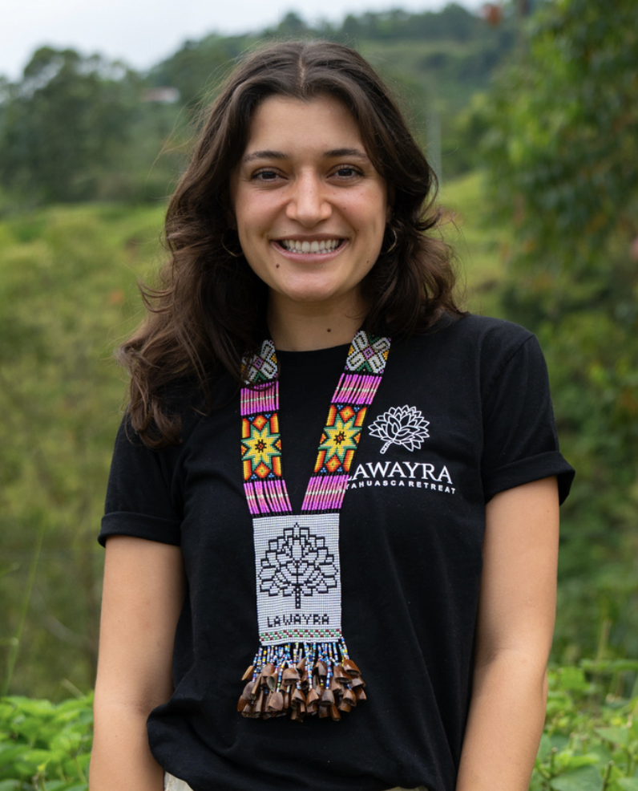

A guided 6-week integration circle to help you process, understand, and live what you experienced in ceremony.
Starting May 10 · Sundays at 2:30 PM Colombia Time · $80
You came home with something powerful. But everyday life has a way of pulling you back into old patterns, and the clarity you felt starts to fade.
You're not losing what you found. You just need a space to ground it.
The real work starts after the experience. Ceremony opens the door, but integration is how you walk through it and stay there.
Without a dedicated space to process what came up, even the most powerful insights can fade back into the noise of daily life. Old routines return. The people around you don't quite understand. And slowly, what felt so clear starts to feel distant.
This series gives you the structure, community, and guidance to make sure that doesn't happen. In 6 weeks, you'll learn how to process, understand, and live what you experienced.
Each week builds on the last, guiding you from grounding the experience to living the transformation in your everyday life.
Learn to sit with what came up without feeling overwhelmed, and process emotions as they arise.
Discover integration practices — meditation, journaling, somatic work — that fit your real life, not just the retreat.
Be part of a group that gets it — no need to explain or justify what you went through.
Walk away with a personal integration plan and the confidence to follow through on what the experience revealed.
Weekly guided sessions with Monica and your group
Meditation, somatic exercises, and journaling prompts
Ongoing community connection through Circle
Clear themes with tools to apply between sessions
Personal support from Monica when you need it
Leave with a personal 3-6 month roadmap

As Head of Facilitation at LaWayra, Monica blends clinical expertise with deep ceremonial experience to guide meaningful transformation.
With a background in psychology, neuroscience, and psychiatric care, she helps guests turn insight into real life change through somatic, therapeutic, and mindfulness-based practices.
She brings a warm, empathetic approach that creates a supportive space for reflection, sharing, and meaningful personal growth that lasts.
Spaces are limited to keep the group intimate and supportive.
No. This series is open to anyone who has been through a ceremony experience and is looking for structured integration support. Whether your experience was at LaWayra or elsewhere, you are welcome.
Sessions are held live via video call through our Circle community. You'll be able to see and interact with Monica and the other participants in a warm, group setting.
While attending live is encouraged, we understand life happens. Each session builds on the previous one, but Monica and the group will help you stay connected even if you need to miss a call.
Whether your experience was recent or months ago, integration is an ongoing process. You can step into this at any time. If something still feels alive or unresolved, this space is for you.
Colombia Time (COT) is UTC-5. That's the same as US Eastern Time (EST), 11:30 AM Pacific, 7:30 PM UK (BST), and 8:30 PM Central Europe (CEST).
Join Monica and a small group of people who understand what you've been through. Together, over 6 weeks, you'll turn what you experienced into something that lasts.
Reserve Your Spot — $80Have questions before signing up? Send us a message on WhatsApp